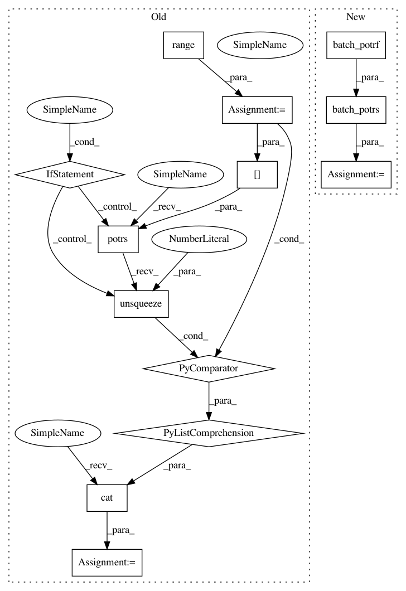

0cf477cb0fc956527b63d11638372c03dce1d1e6,test/util/test_linear_cg.py,TestLinearCG,test_batch_cg_with_tridiag,#TestLinearCG#,70
Before Change
// Check cg
matrix_chol = torch.cat([matrix[i].potrf().unsqueeze(0) for i in range(5)])
actual = torch.cat(
[torch.potrs(rhs[i], matrix_chol[i]).unsqueeze(0) for i in range(5)]
)
self.assertTrue(approx_equal(solves, actual))
// Check tridiag
for i in range(5):
After Change
)
// Check cg
matrix_chol = batch_potrf(matrix)
actual = batch_potrs(rhs, matrix_chol)
self.assertTrue(approx_equal(solves, actual))
// Check tridiag
for i in range(5):
In pattern: SUPERPATTERN
Frequency: 3
Non-data size: 13
Instances
Project Name: cornellius-gp/gpytorch
Commit Name: 0cf477cb0fc956527b63d11638372c03dce1d1e6
Time: 2018-05-22
Author: gpleiss@gmail.com
File Name: test/util/test_linear_cg.py
Class Name: TestLinearCG
Method Name: test_batch_cg_with_tridiag
Project Name: cornellius-gp/gpytorch
Commit Name: 0cf477cb0fc956527b63d11638372c03dce1d1e6
Time: 2018-05-22
Author: gpleiss@gmail.com
File Name: test/util/test_linear_cg.py
Class Name: TestLinearCG
Method Name: test_batch_cg
Project Name: cornellius-gp/gpytorch
Commit Name: 0cf477cb0fc956527b63d11638372c03dce1d1e6
Time: 2018-05-22
Author: gpleiss@gmail.com
File Name: gpytorch/utils/pivoted_cholesky.py
Class Name:
Method Name: woodbury_factor
Project Name: cornellius-gp/gpytorch
Commit Name: 0cf477cb0fc956527b63d11638372c03dce1d1e6
Time: 2018-05-22
Author: gpleiss@gmail.com
File Name: test/util/test_linear_cg.py
Class Name: TestLinearCG
Method Name: test_batch_cg_with_tridiag